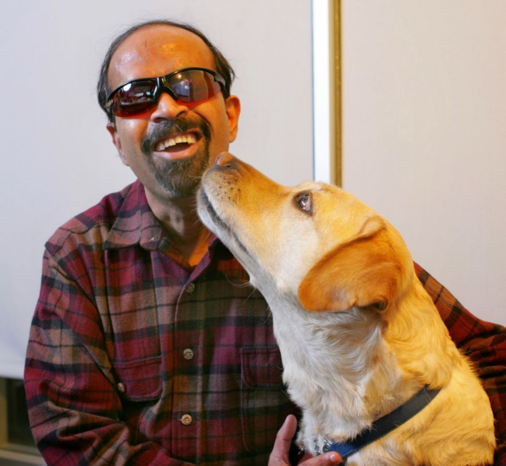

Dr. T. V. Raman is an accomplished Computer Scientist with over 25 years of leadership experience in advanced technology development. During this time, he has authored 3 books and filed over 75 patents; his work on eyes-free interaction has been profiled in mainstream publications including the New York Times and Scientific American.
Dr. Raman now works on user-aware interfaces in the context of the Google Assistant. During his 12+ years as a Google Research Scientist, he has worked on Google Search, Android and ChromeOS to build the underpinnings of Accessibility on Google's core platforms.
He now works on the Assistant with the goal of creating friction-free user interfaces for eyes-free interaction. His objective is to deliver technologies that enable ubiquitous, eyes-free access to the cloud from a wide variety of devices ranging from smart phones and tablets to wearables. Speech is the next dimension in user interfaces, and Dr. Raman develops application frameworks that combine speech technologies with the power of the Cloud to deliver user-aware interfaces that enable anytime, anywhere access to one's personal smart assistant.
Raman did an MSc in Math and CS (1987–1989) at the Indian Institute Of Technology Bombay (IITB), before going on to do his PhD at Cornell University (1989–1994). He came to Cornell as a mathematician who intended to apply his mathematics background to the field of Robotics and Computer Vision. While doing his Computer Science coursework, he discovered the potential presented by the combination of speech technology and richly structured electronic documents, and started building a system that used text-to-speech (TTS) to render such content — this led to Audio System for Technical Readings (AsTeR). Dr. Raman's PhD thesis was awarded the ACM Doctoral Dissertation Award in 1994. This dissertation defined several seminal concepts including that of audio formatting and structured browsing — concepts that have continued to appear throughout his later work.
After finishing his graduate work at Cornell, Raman went on to apply the concept of audio formatting and structured browsing to desktop interfaces — to further explore these ideas, he designed Aural CSS (ACSS) and built Emacspeak — an Open Source project that he continues to use for all his daily work. In addition to being an effective research work-bench for eyes-free interaction, Emacspeak has proven itself to be a useful Accessibility solution on a wide range of platforms.
Previous to joining Google Research in 2005, Dr. Raman worked at Digital Equipment Corporation, Adobe Systems and IBM Research. While at Adobe, he brought the lessons learnt from AsTeR to enrich PDF with additional document structure to enable rich information extraction. At IBM, he worked on multimodal interfaces to the Web and made seminal contributions to several W3C specifications including XForms.
On a personal note, my favorite hobby is recreational mathematics. I enjoy working on puzzles, especially those that involve an intuitive feel for mathematics. One of the things I enjoyed doing the most in the early eighties was to solve the Rubik's cube faster than anyone else around me, on an average of about thirty seconds! During the last few years, discovering Zome Systems for building complex polyhedra has helped rekindle my interest in polyhedral geometry. I am also interested in linguistics and can speak about eight languages, including French, German and several Indian languages.
Memories Of Time At IIT
Too many fond memories to fit in this margin, but highlights include interacting with Prof. Isaac, having books read to me by an army of freshmen volunteers, and walking to the CS Lab and writing code with my able volunteers providing spoken feedback while looking over my shoulder.
Mantra For Success
To strive, to seek, to find, and not to yield.